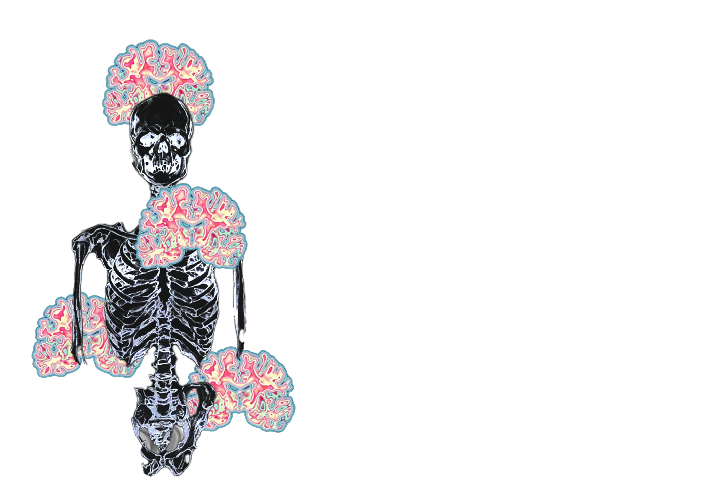

Scientific studies have suggested brain acivity continues after a declared death for up to seven minutes allowing a dead person to experience
a state of consciousness through continued cortex function despite cessation of a heartbeat.
During this post-death consciousness, it is believed your brain undergoes a period of self reflection through visualization of a series of personal memories in a dreamlike sequence
